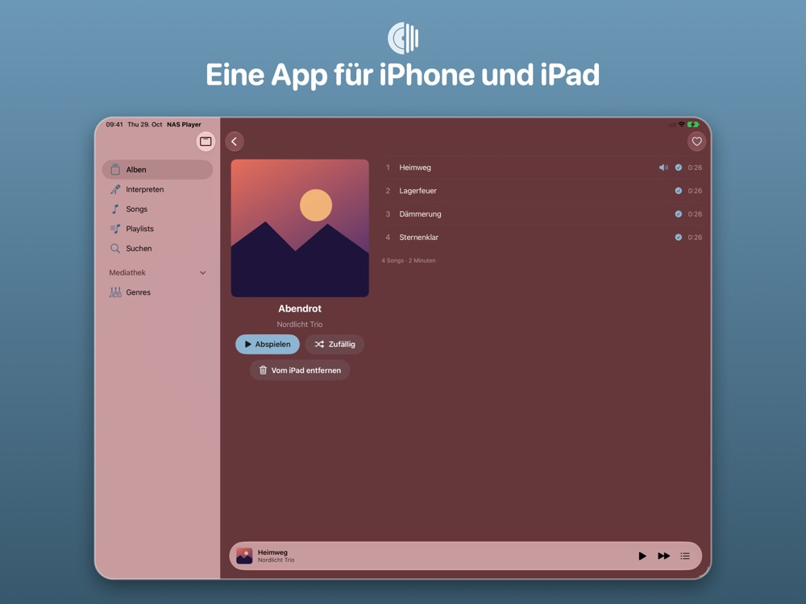
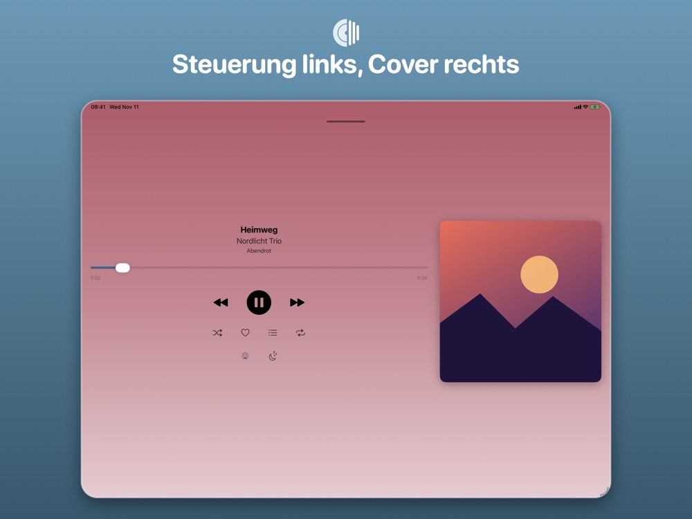

IPHONE
Deine ganze Bibliothek in der Hosentasche
Albenübersicht, Offline-Laden, Speicher, Playlists, Statistik und Sleep-Timer auf dem iPhone.


Spielt die Musik von deinem Synology-NAS (Audio Station) auf iPhone und iPad: streamen, offline hören, CarPlay und Siri. Kostenlos, ohne Werbung, ohne Tracking.
 Kostenlos · keine In-App-Käufe
Kostenlos · keine In-App-Käufe


Auf dem iPhone, auf dem iPad und im Auto: dieselbe Mediathek, dieselben Favoriten, dieselbe Musik.
Albenübersicht, Offline-Laden, Speicher, Playlists, Statistik und Sleep-Timer auf dem iPhone.
Eine App für iPhone und iPad: Seitenleiste, zweispaltige Albumseite und ein Player mit Steuerung links und Cover rechts.


Home, Mediathek, Playlists und Genres direkt im Auto auswählen.

Im Heimnetz findet die App dein NAS selbst. Unterwegs per https-Adresse oder QuickConnect.
Alben und Interpreten gezielt aufs Gerät laden. Das Laden läuft auch im Hintergrund weiter.
Zu Hause, unterwegs oder ohne Netz: Geladenes spielt überall, der Rest kommt per Stream vom NAS. Im Auto wählst du mit CarPlay direkt auf dem Display.
Ein Synology-NAS mit Audio Station, das über eine https-Adresse mit gültigem Zertifikat oder über QuickConnect erreichbar ist. Ohne NAS kannst du die App im Demo-Modus ausprobieren.